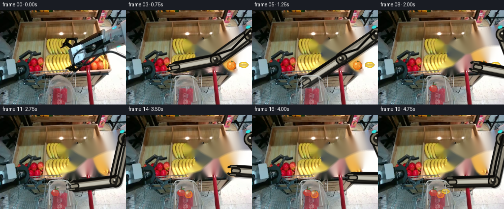
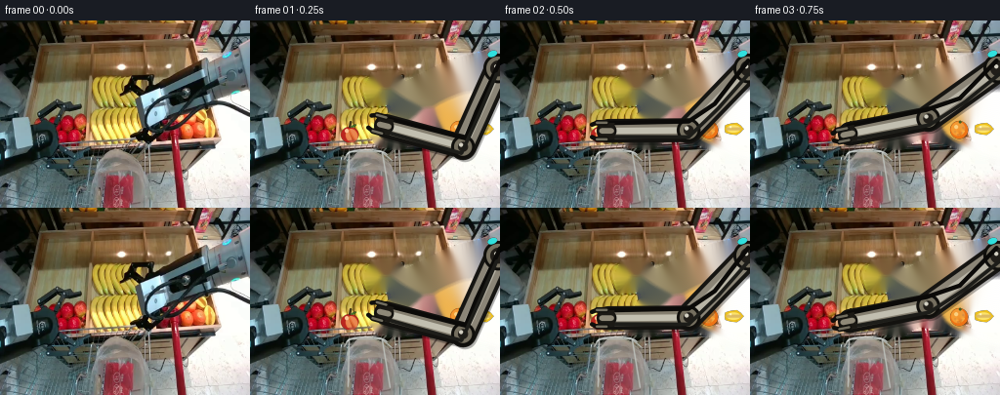
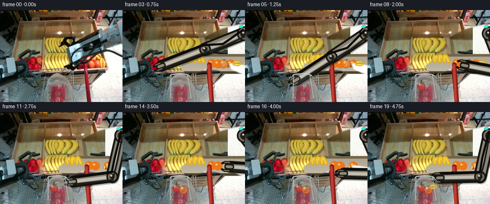
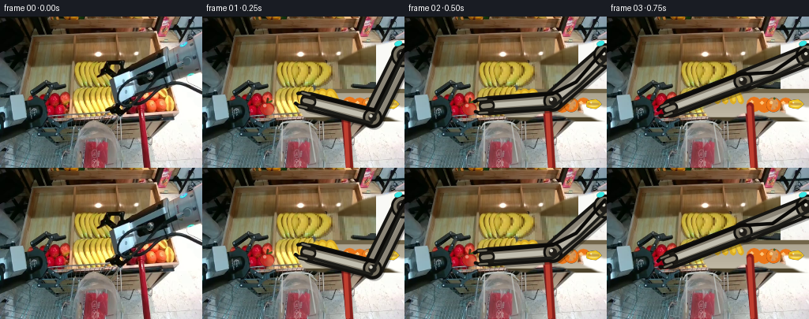
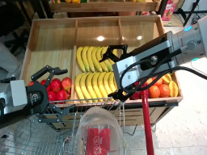
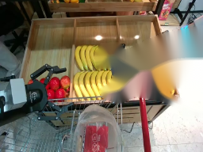
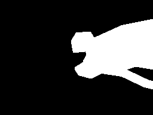

CODING AGENTS AS PIXEL WORLD MODELS
traex/GPT-5.6-Sol · common50_0000
点击播放 · 原生 RGB 像素
逐轮保存的候选
回放视频、检查图与代码变化。
每份候选均可单独播放。实际图片检查记录在下方工具轨迹中。
候选 01播放与检查图
点击播放 · 原生 RGB 像素

展开代码变化
--- 上一保存版本
+++ 本次保存版本
@@ -0,0 +1,207 @@
+from pathlib import Path
+import math
+import cv2
+import numpy as np
+from PIL import Image
+import artifact_io
+
+CASE_DIR = Path(__file__).resolve().parent
+W, H = 256, 192
+S = 3 # antialiasing scale for constructed geometry
+
+
+def ease(t):
+ t = max(0.0, min(1.0, float(t)))
+ return t*t*(3.0-2.0*t)
+
+
+def lerp(a, b, t):
+ q = ease(t)
+ return (a[0]*(1-q)+b[0]*q, a[1]*(1-q)+b[1]*q)
+
+
+def make_clean_plate(src):
+ """Remove only the moving right robot, retaining the fixed camera scene."""
+ m = np.zeros((H, W), np.uint8)
+ # Original upper/lower links, wrist, gripper, and loose black service cables.
+ poly = np.array([(256,30),(256,102),(231,98),(210,105),(184,109),(171,119),
+ (153,130),(132,126),(124,117),(139,104),(148,92),(145,84),
+ (123,85),(119,70),(126,55),(149,53),(158,66),(205,42)], np.int32)
+ cv2.fillPoly(m, [poly], 255)
+ cv2.line(m, (253,52), (153,106), 255, 28)
+ for pts, thick in [
+ ([(157,88),(204,75),(256,83)],7),
+ ([(151,105),(194,101),(231,91),(256,95)],8),
+ ([(145,115),(189,115),(225,103),(256,108)],7),
+ ([(163,114),(204,120),(239,137),(256,142)],7)]:
+ cv2.polylines(m, [np.array(pts,np.int32)], False, 255, thick)
+ m = cv2.dilate(m, np.ones((5,5),np.uint8))
+ # Telea gives a stable, time-invariant occluded background. The animated arm
+ # covers most of this region in every frame.
+ plate = cv2.inpaint(src, m, 5, cv2.INPAINT_TELEA)
+ return plate
+
+
+def draw_fruit(img, center, kind, radius=9, alpha=1.0):
+ """Small shaded produce, rendered at native resolution with soft antialiasing."""
+ x, y = center
+ layer = np.zeros((H*S, W*S, 4), np.uint8)
+ def scp(p): return (int(round(p[0]*S)), int(round(p[1]*S)))
+ if kind == 'apple':
+ # red apple with dark dimple, short stem, warm side and highlight
+ cv2.ellipse(layer, scp((x,y+1)), (int(radius*S),int((radius-1)*S)), 0,0,360,
+ (31,38,186,int(255*alpha)), -1, cv2.LINE_AA)
+ cv2.ellipse(layer, scp((x+2,y+2)), (int((radius-3)*S),int((radius-2)*S)), -20,0,360,
+ (35,56,220,int(150*alpha)), -1, cv2.LINE_AA)
+ cv2.circle(layer, scp((x-3,y-3)), max(1,int(2*S)), (155,178,255,int(185*alpha)), -1, cv2.LINE_AA)
+ cv2.line(layer, scp((x,y-radius+2)), scp((x+1,y-radius-3)), (22,53,67,int(255*alpha)), max(1,2*S), cv2.LINE_AA)
+ cv2.ellipse(layer, scp((x+4,y-radius+1)), (3*S,1*S), -25,0,360,(32,104,52,int(230*alpha)),-1,cv2.LINE_AA)
+ elif kind == 'orange':
+ cv2.circle(layer, scp((x,y)), int(radius*S), (22,115,238,int(255*alpha)), -1, cv2.LINE_AA)
+ cv2.circle(layer, scp((x-1,y-1)), int((radius-2)*S), (26,132,250,int(130*alpha)), -1, cv2.LINE_AA)
+ cv2.circle(layer, scp((x-3,y-3)), max(1,int(2*S)), (145,219,255,int(190*alpha)), -1, cv2.LINE_AA)
+ cv2.circle(layer, scp((x+1,y-radius+1)), max(1,int(1.5*S)), (31,91,57,int(240*alpha)), -1, cv2.LINE_AA)
+ for dx,dy in [(-4,2),(3,3),(4,-2),(-1,5)]:
+ cv2.circle(layer, scp((x+dx,y+dy)), 1*S, (25,92,204,int(100*alpha)), -1, cv2.LINE_AA)
+ else: # yellow star fruit: oblong golden fruit with five pronounced ridges
+ pts=[]
+ for i in range(20):
+ a=2*math.pi*i/20
+ rr=radius*(1.0 if i%4 else 1.14)
+ pts.append(scp((x+rr*math.cos(a), y+0.63*rr*math.sin(a))))
+ cv2.fillPoly(layer,[np.array(pts,np.int32)],(30,193,238,int(255*alpha)),cv2.LINE_AA)
+ cv2.ellipse(layer,scp((x,y)),(int((radius-2)*S),int((radius*.43)*S)),0,0,360,
+ (42,215,252,int(175*alpha)),-1,cv2.LINE_AA)
+ for off in (-4,0,4):
+ cv2.line(layer,scp((x-radius+2,y+off*.20)),scp((x+radius-2,y+off*.20)),
+ (25,153,205,int(170*alpha)),max(1,S),cv2.LINE_AA)
+ cv2.circle(layer,scp((x-3,y-2)),max(1,S),(177,244,255,int(210*alpha)),-1,cv2.LINE_AA)
+ small=cv2.resize(layer,(W,H),interpolation=cv2.INTER_AREA)
+ a=small[:,:,3:4].astype(np.float32)/255.0
+ img[:] = (img.astype(np.float32)*(1-a)+small[:,:,:3].astype(np.float32)*a).astype(np.uint8)
+
+
+def ik(target):
+ base=np.array([254.0,49.0])
+ t=np.array(target,dtype=float)
+ L1,L2=88.0,82.0
+ dvec=t-base; d=float(np.linalg.norm(dvec)); d=max(abs(L1-L2)+.01,min(L1+L2-.01,d))
+ ang=math.atan2(dvec[1],dvec[0])
+ c=(L1*L1+d*d-L2*L2)/(2*L1*d)
+ # Elbow above the base-target axis, matching the starting embodiment.
+ theta=ang-math.acos(max(-1,min(1,c)))
+ elbow=base+L1*np.array([math.cos(theta),math.sin(theta)])
+ return base,elbow,t
+
+
+def draw_arm(img, target, grip_open=True):
+ """Rigid two-link right arm, constant dimensions across all frames."""
+ base,e,wrist=ik(target)
+ u=(wrist-e); u=u/(np.linalg.norm(u)+1e-6)
+ v=np.array([-u[1],u[0]])
+ canvas=np.zeros((H*S,W*S,4),np.uint8)
+ def P(p): return tuple(np.round(np.array(p)*S).astype(int))
+ def line(a,b,color,width): cv2.line(canvas,P(a),P(b),color,int(width*S),cv2.LINE_AA)
+ # arm shadow: coherent and subtle
+ line(base+np.array([2,3]),e+np.array([2,3]),(0,0,0,75),25)
+ line(e+np.array([2,3]),wrist+np.array([2,3]),(0,0,0,75),23)
+ # rigid upper arm: dark outline + cool metal inset
+ line(base,e,(18,21,22,255),27)
+ line(base,e,(119,133,139,255),19)
+ line(base,e,(166,180,184,255),8)
+ # lower arm
+ line(e,wrist,(15,18,19,255),24)
+ line(e,wrist,(111,126,132,255),16)
+ line(e,wrist,(176,191,194,255),6)
+ # joints do not change size (physical consistency)
+ for p,r in [(base,15),(e,12),(wrist,8)]:
+ cv2.circle(canvas,P(p),int(r*S),(12,15,16,255),-1,cv2.LINE_AA)
+ cv2.circle(canvas,P(p),int((r-3)*S),(95,111,117,255),-1,cv2.LINE_AA)
+ cv2.circle(canvas,P(p),max(2,int((r-7)*S)),(25,30,33,255),-1,cv2.LINE_AA)
+ cv2.circle(canvas,P(p-np.array([2,2])),max(1,int(2*S)),(194,208,211,255),-1,cv2.LINE_AA)
+ # Two service cables stay attached to the same joints.
+ bend=(base+e)*.48 + np.array([5,8])
+ cv2.polylines(canvas,[np.array([P(base+v*8),P(bend),P(e+v*9),P(wrist+v*8)],np.int32)],False,(8,10,11,255),int(4*S),cv2.LINE_AA)
+ cv2.polylines(canvas,[np.array([P(base-v*6),P((base+e)*.5-v*9),P(e-v*7),P(wrist-v*6)],np.int32)],False,(25,29,29,255),int(3*S),cv2.LINE_AA)
+ # compact parallel gripper, aligned with final link
+ palm=wrist+u*2
+ poly=np.array([P(palm-u*8+v*8),P(palm+u*7+v*8),P(palm+u*7-v*8),P(palm-u*8-v*8)],np.int32)
+ cv2.fillPoly(canvas,[poly],(20,25,27,255),cv2.LINE_AA)
+ cv2.line(canvas,P(palm-u*5),P(palm+u*5),(120,137,143,255),int(5*S),cv2.LINE_AA)
+ sep=8.5 if grip_open else 6.0
+ for sign in (-1,1):
+ root=palm+v*sign*sep
+ mid=palm+u*10+v*sign*sep
+ tip=palm+u*15+v*sign*(sep-2.2)
+ line(root,mid,(14,18,19,255),5)
+ line(mid,tip,(12,15,16,255),4)
+ line(root,mid,(94,109,113,255),2)
+ # cyan status lamp on the fixed right chassis
+ cv2.ellipse(canvas,P((248,34)),(5*S,3*S),-20,0,360,(228,231,41,235),-1,cv2.LINE_AA)
+ small=cv2.resize(canvas,(W,H),interpolation=cv2.INTER_AREA)
+ a=small[:,:,3:4].astype(np.float32)/255.0
+ img[:] = (img.astype(np.float32)*(1-a)+small[:,:,:3].astype(np.float32)*a).astype(np.uint8)
+
+
+def bag_front(img):
+ """Reassert the translucent front rim so deposited fruit reads as inside."""
+ overlay=img.copy()
+ pts=np.array([(96,139),(102,132),(134,133),(146,144),(142,190),(101,190)],np.int32)
+ cv2.fillPoly(overlay,[pts],(205,207,200))
+ cv2.addWeighted(overlay,.10,img,.90,0,img)
+ cv2.polylines(img,[np.array([(96,142),(101,134),(134,134),(145,143)],np.int32)],False,(172,180,176),1,cv2.LINE_AA)
+ cv2.polylines(img,[np.array([(101,135),(100,183)],np.int32)],False,(186,191,188),1,cv2.LINE_AA)
+ cv2.polylines(img,[np.array([(135,135),(143,184)],np.int32)],False,(187,192,188),1,cv2.LINE_AA)
+ cv2.ellipse(img,(119,138),(21,6),0,190,350,(218,220,214),1,cv2.LINE_AA)
+
+
+def target_for_frame(i):
+ # Purposeful waypoint motion: approach, close, lift/carry, release; repeated.
+ pts={
+ 1:(139,108),2:(111,113),3:(102,116),
+ 4:(104,129),5:(112,145),6:(119,157),
+ 7:(165,132),8:(205,116),9:(214,112),
+ 10:(190,128),11:(153,145),12:(128,158),
+ 13:(176,132),14:(225,114),15:(239,111),
+ 16:(207,128),17:(169,145),18:(137,158),19:(153,137)
+ }
+ return pts[i]
+
+
+def main():
+ rgb=np.array(Image.open(CASE_DIR/'first_frame.png').convert('RGB'),dtype=np.uint8)
+ src=cv2.cvtColor(rgb,cv2.COLOR_RGB2BGR)
+ plate=make_clean_plate(src)
+ # Native source centers and deposit locations.
+ sources={'apple':(102,116),'orange':(214,112),'star':(239,111)}
+ drops={'apple':(112,158),'orange':(127,162),'star':(137,156)}
+ frames=[rgb.copy()] # exact contractual first frame
+ for i in range(1,20):
+ im=plate.copy()
+ # Produce remains visibly on the display until its grasp frame.
+ if i <= 3: draw_fruit(im,sources['apple'],'apple',9)
+ if i <= 9: draw_fruit(im,sources['orange'],'orange',9)
+ if i <= 15: draw_fruit(im,sources['star'],'star',9)
+ # Successfully deposited items stay in the bag/cart.
+ if i >= 6: draw_fruit(im,drops['apple'],'apple',8,.92)
+ if i >= 12: draw_fruit(im,drops['orange'],'orange',8,.92)
+ if i >= 18: draw_fruit(im,drops['star'],'star',8,.92)
+ # Carried object remains rigidly centered between the gripper fingers.
+ held=None
+ if 3 <= i <= 5: held='apple'
+ elif 9 <= i <= 11: held='orange'
+ elif 15 <= i <= 17: held='star'
+ t=target_for_frame(i)
+ # draw fruit first, then fingers close around it
+ if held: draw_fruit(im,t,held,8)
+ draw_arm(im,t,grip_open=(held is None))
+ bag_front(im)
+ frames.append(cv2.cvtColor(im,cv2.COLOR_BGR2RGB))
+ arr=np.stack(frames).astype(np.uint8)
+ artifact_io.save(arr,CASE_DIR)
+ # Contract checks kept in generator for reproducibility.
+ assert arr.shape==(20,192,256,3) and arr.dtype==np.uint8
+ assert np.array_equal(arr[0],rgb)
+
+if __name__=='__main__':
+ main()
候选 02播放与检查图
点击播放 · 原生 RGB 像素


展开代码变化
--- 上一保存版本
+++ 本次保存版本
@@ -36,9 +36,48 @@
([(163,114),(204,120),(239,137),(256,142)],7)]:
cv2.polylines(m, [np.array(pts,np.int32)], False, 255, thick)
m = cv2.dilate(m, np.ones((5,5),np.uint8))
+ # Also make one real apple removable rather than leaving a duplicate behind.
+ apple_mask=np.zeros_like(m)
+ cv2.circle(apple_mask,(82,116),10,255,-1)
+ src=cv2.inpaint(src,apple_mask,3,cv2.INPAINT_TELEA)
# Telea gives a stable, time-invariant occluded background. The animated arm
# covers most of this region in every frame.
plate = cv2.inpaint(src, m, 5, cv2.INPAINT_TELEA)
+
+ # A semantic clean plate is substantially crisper than asking an inpainting
+ # algorithm to invent the entire hidden half of the display. Reconstruct the
+ # empty upper wooden bin by reflecting known wood pixels, and the lower bin
+ # as a fruit-display surface. This is still made exclusively from frame 00.
+ recon=plate.copy()
+ for y in range(22,96):
+ for x in range(116,W):
+ sx=int(np.clip(116-(x-116)*.45,42,116))
+ recon[y,x]=src[y,sx]
+ # Rightmost area is the pale floor behind the display.
+ for y in range(30,102):
+ for x in range(220,W):
+ q=src[min(160,max(132,y+72)),min(252,x)]
+ recon[y,x]=(q.astype(np.uint16)*3+np.array([235,239,238],np.uint16))//4
+ # Lower wooden produce compartment.
+ for y in range(92,132):
+ shade=int(142+0.65*(y-92))
+ cv2.line(recon,(116,y),(255,y),(min(185,shade),min(202,shade+20),min(214,shade+28)),1)
+ cv2.line(recon,(116,94),(255,94),(73,101,113),3,cv2.LINE_AA)
+ cv2.line(recon,(116,130),(255,130),(43,67,77),4,cv2.LINE_AA)
+ # Rows of elongated bananas (partially hidden later by the moving arm).
+ for cx in (126,136,146,156,166):
+ cv2.ellipse(recon,(cx,112),(5,18),-16,200,350,(34,173,221),5,cv2.LINE_AA)
+ cv2.ellipse(recon,(cx,112),(4,17),-16,205,345,(60,205,241),2,cv2.LINE_AA)
+ # Static neighboring oranges establish that this is a continuous display.
+ for cx,cy,r in [(186,111,9),(199,112,9),(226,112,9)]:
+ cv2.circle(recon,(cx,cy),r,(25,119,236),-1,cv2.LINE_AA)
+ cv2.circle(recon,(cx-3,cy-3),2,(123,199,255),-1,cv2.LINE_AA)
+ # Feather the reconstruction only into pixels originally occupied by robot.
+ a=cv2.GaussianBlur(m,(5,5),0).astype(np.float32)[...,None]/255.0
+ plate=(plate.astype(np.float32)*(1-a)+recon.astype(np.float32)*a).astype(np.uint8)
+ # The red cart/display post is fixed world geometry, not part of the robot.
+ cv2.line(plate,(181,113),(186,191),(26,31,132),8,cv2.LINE_AA)
+ cv2.line(plate,(180,114),(184,190),(47,62,192),3,cv2.LINE_AA)
return plate
@@ -158,8 +197,8 @@
def target_for_frame(i):
# Purposeful waypoint motion: approach, close, lift/carry, release; repeated.
pts={
- 1:(139,108),2:(111,113),3:(102,116),
- 4:(104,129),5:(112,145),6:(119,157),
+ 1:(136,108),2:(106,113),3:(82,116),
+ 4:(92,129),5:(108,145),6:(119,157),
7:(165,132),8:(205,116),9:(214,112),
10:(190,128),11:(153,145),12:(128,158),
13:(176,132),14:(225,114),15:(239,111),
@@ -173,7 +212,7 @@
src=cv2.cvtColor(rgb,cv2.COLOR_RGB2BGR)
plate=make_clean_plate(src)
# Native source centers and deposit locations.
- sources={'apple':(102,116),'orange':(214,112),'star':(239,111)}
+ sources={'apple':(82,116),'orange':(211,112),'star':(239,111)}
drops={'apple':(112,158),'orange':(127,162),'star':(137,156)}
frames=[rgb.copy()] # exact contractual first frame
for i in range(1,20):
候选 03播放与检查图
点击播放 · 原生 RGB 像素

展开代码变化
代码未变化；重新保存了产物。
候选 04播放与检查图
点击播放 · 原生 RGB 像素


展开代码变化
--- 上一保存版本
+++ 本次保存版本
@@ -123,7 +123,8 @@
def ik(target):
base=np.array([254.0,49.0])
t=np.array(target,dtype=float)
- L1,L2=88.0,82.0
+ # These lengths cover every waypoint without stretching or telescoping.
+ L1,L2=96.0,92.0
dvec=t-base; d=float(np.linalg.norm(dvec)); d=max(abs(L1-L2)+.01,min(L1+L2-.01,d))
ang=math.atan2(dvec[1],dvec[0])
c=(L1*L1+d*d-L2*L2)/(2*L1*d)
候选 05播放与检查图
可观测工具轨迹
实际执行的命令与返回图片。
命令 1exit 0
/bin/bash -lc "cat prompt.txt && printf '\\n--- GENERATION RULES ---\\n' && cat GENERATION_RULES.md"
命令 2exit 1
/bin/bash -lc "find . -maxdepth 2 -type f -printf '%p\\n' | sort && printf '\\n--- tool availability ---\\n' && command -v ffmpeg && command -v python3 && python3 - <<'PY' mods=['PIL','cv2','numpy','imageio','torch'] for m in mods: try: x=__import__(m); print(m,'ok',getattr(x,'__version__','')) except Exception as e: print(m,'missing',e) PY"
命令 3exit 0
/bin/bash -lc "cat task_spec.json; printf '\\n--- artifact_io.py ---\\n'; sed -n '1,260p' artifact_io.py"
命令 4exit 0
/bin/bash -lc 'for x in ffmpeg ffprobe python3; do printf "$x: "; command -v "$x" || true; done python3 - <<'"'PY' mods=['PIL','cv2','numpy','imageio'] for m in mods: try: x=__import__(m); print(m,'ok',getattr(x,'__version__','')) except Exception as e: print(m,'missing',e) PY"
命令 5exit 0
/bin/bash -lc "python3 - <<'PY'
from PIL import Image
im=Image.open('first_frame.png')
im.resize((1024,768)).save('.tmp_up.png')
PY"命令 6exit 2
/bin/bash -lc "cat > /tmp/test.py <<'PY'
from PIL import Image
import cv2, numpy as np
im=cv2.imread('first_frame.png')
m=np.zeros(im.shape[:2],np.uint8)
# body
cv2.fillPoly(m,[np.array([(256,34),(256,99),(226,95),(205,107),(177,108),(168,120),(151,128),(133,123),(127,114),(141,105),(147,91),(145,83),(124,85),(121,69),(129,56),(149,55),(156,66),(205,44)],np.int32)],255)
# lower forearm broad
cv2.line(m,(252,53),(153,107),255,26)
# cables
for pts in [[(158,90),(205,76),(256,84)],[(152,107),(194,102),(232,93),(256,96)],[(146,116),(191,115),(226,104),(256,109)],[(166,115),(206,121),(244,139),(256,142)]]:
cv2.polylines(m,[np.array(pts,np.int32)],False,255,7)
m=cv2.dilate(m,np.ones((5,5),np.uint8))
out=cv2.inpaint(im,m,5,cv2.INPAINT_TELEA)
cv2.imwrite('.tmp_bg.png',out)
cv2.imwrite('.tmp_mask.png',m)
PY
python3 /tmp/test.py"命令 7exit 0
/bin/bash -lc "cat > .tmp/test.py <<'PY'
import cv2, numpy as np
im=cv2.imread('first_frame.png')
m=np.zeros(im.shape[:2],np.uint8)
cv2.fillPoly(m,[np.array([(256,34),(256,99),(226,95),(205,107),(177,108),(168,120),(151,128),(133,123),(127,114),(141,105),(147,91),(145,83),(124,85),(121,69),(129,56),(149,55),(156,66),(205,44)],np.int32)],255)
cv2.line(m,(252,53),(153,107),255,26)
for pts in [[(158,90),(205,76),(256,84)],[(152,107),(194,102),(232,93),(256,96)],[(146,116),(191,115),(226,104),(256,109)],[(166,115),(206,121),(244,139),(256,142)]]:
cv2.polylines(m,[np.array(pts,np.int32)],False,255,7)
m=cv2.dilate(m,np.ones((5,5),np.uint8))
out=cv2.inpaint(im,m,5,cv2.INPAINT_TELEA)
cv2.imwrite('.tmp_bg.png',out)
cv2.imwrite('.tmp_mask.png',m)
PY
python3 .tmp/test.py"命令 8exit 0
/bin/bash -lc "cat > generate.py <<'PY'
from pathlib import Path
import math
import cv2
import numpy as np
from PIL import Image
import artifact_io
CASE_DIR = Path(__file__).resolve().parent
W, H = 256, 192
S = 3 # antialiasing scale for constructed geometry
def ease(t):
t = max(0.0, min(1.0, float(t)))
return t*t*(3.0-2.0*t)
def lerp(a, b, t):
q = ease(t)
return (a[0]*(1-q)+b[0]*q, a[1]*(1-q)+b[1]*q)
def make_clean_plate(src):
\"\"\"Remove only the moving right robot, retaining the fixed camera scene.\"\"\"
m = np.zeros((H, W), np.uint8)
# Original upper/lower links, wrist, gripper, and loose black service cables.
poly = np.array([(256,30),(256,102),(231,98),(210,105),(184,109),(171,119),
(153,130),(132,126),(124,117),(139,104),(148,92),(145,84),
(123,85),(119,70),(126,55),(149,53),(158,66),(205,42)], np.int32)
cv2.fillPoly(m, [poly], 255)
cv2.line(m, (253,52), (153,106), 255, 28)
for pts, thick in [
([(157,88),(204,75),(256,83)],7),
([(151,105),(194,101),(231,91),(256,95)],8),
([(145,115),(189,115),(225,103),(256,108)],7),
([(163,114),(204,120),(239,137),(256,142)],7)]:
cv2.polylines(m, [np.array(pts,np.int32)], False, 255, thick)
m = cv2.dilate(m, np.ones((5,5),np.uint8))
# Telea gives a stable, time-invariant occluded background. The animated arm
# covers most of this region in every frame.
plate = cv2.inpaint(src, m, 5, cv2.INPAINT_TELEA)
return plate
def draw_fruit(img, center, kind, radius=9, alpha=1.0):
\"\"\"Small shaded produce, rendered at native resolution with soft antialiasing.\"\"\"
x, y = center
layer = np.zeros((H*S, W*S, 4), np.uint8)
def scp(p): return (int(round(p[0]*S)), int(round(p[1]*S)))
if kind == 'apple':
# red apple with dark dimple, short stem, warm side and highlight
cv2.ellipse(layer, scp((x,y+1)), (int(radius*S),int((radius-1)*S)), 0,0,360,
(31,38,186,int(255*alpha)), -1, cv2.LINE_AA)
cv2.ellipse(layer, scp((x+2,y+2)), (int((radius-3)*S),int((radius-2)*S)), -20,0,360,
(35,56,220,int(150*alpha)), -1, cv2.LINE_AA)
cv2.circle(layer, scp((x-3,y-3)), max(1,int(2*S)), (155,178,255,int(185*alpha)), -1, cv2.LINE_AA)
cv2.line(layer, scp((x,y-radius+2)), scp((x+1,y-radius-3)), (22,53,67,int(255*alpha)), max(1,2*S), cv2.LINE_AA)
cv2.ellipse(layer, scp((x+4,y-radius+1)), (3*S,1*S), -25,0,360,(32,104,52,int(230*alpha)),-1,cv2.LINE_AA)
elif kind == 'orange':
cv2.circle(layer, scp((x,y)), int(radius*S), (22,115,238,int(255*alpha)), -1, cv2.LINE_AA)
cv2.circle(layer, scp((x-1,y-1)), int((radius-2)*S), (26,132,250,int(130*alpha)), -1, cv2.LINE_AA)
cv2.circle(layer, scp((x-3,y-3)), max(1,int(2*S)), (145,219,255,int(190*alpha)), -1, cv2.LINE_AA)
cv2.circle(layer, scp((x+1,y-radius+1)), max(1,int(1.5*S)), (31,91,57,int(240*alpha)), -1, cv2.LINE_AA)
for dx,dy in [(-4,2),(3,3),(4,-2),(-1,5)]:
cv2.circle(layer, scp((x+dx,y+dy)), 1*S, (25,92,204,int(100*alpha)), -1, cv2.LINE_AA)
else: # yellow star fruit: oblong golden fruit with five pronounced ridges
pts=[]
for i in range(20):
a=2*math.pi*i/20
rr=radius*(1.0 if i%4 else 1.14)
pts.append(scp((x+rr*math.cos(a), y+0.63*rr*math.sin(a))))
cv2.fillPoly(layer,[np.array(pts,np.int32)],(30,193,238,int(255*alpha)),cv2.LINE_AA)
cv2.ellipse(layer,scp((x,y)),(int((radius-2)*S),int((radius*.43)*S)),0,0,360,
(42,215,252,int(175*alpha)),-1,cv2.LINE_AA)
for off in (-4,0,4):
cv2.line(layer,scp((x-radius+2,y+off*.20)),scp((x+radius-2,y+off*.20)),
(25,153,205,int(170*alpha)),max(1,S),cv2.LINE_AA)
cv2.circle(layer,scp((x-3,y-2)),max(1,S),(177,244,255,int(210*alpha)),-1,cv2.LINE_AA)
small=cv2.resize(layer,(W,H),interpolation=cv2.INTER_AREA)
a=small[:,:,3:4].astype(np.float32)/255.0
img[:] = (img.astype(np.float32)*(1-a)+small[:,:,:3].astype(np.float32)*a).astype(np.uint8)
def ik(target):
base=np.array([254.0,49.0])
t=np.array(target,dtype=float)
L1,L2=88.0,82.0
dvec=t-base; d=float(np.linalg.norm(dvec)); d=max(abs(L1-L2)+.01,min(L1+L2-.01,d))
ang=math.atan2(dvec[1],dvec[0])
c=(L1*L1+d*d-L2*L2)/(2*L1*d)
# Elbow above the base-target axis, matching the starting embodiment.
theta=ang-math.acos(max(-1,min(1,c)))
elbow=base+L1*np.array([math.cos(theta),math.sin(theta)])
return base,elbow,t
def draw_arm(img, target, grip_open=True):
\"\"\"Rigid two-link right arm, constant dimensions across all frames.\"\"\"
base,e,wrist=ik(target)
u=(wrist-e); u=u/(np.linalg.norm(u)+1e-6)
v=np.array([-u[1],u[0]])
canvas=np.zeros((H*S,W*S,4),np.uint8)
def P(p): return tuple(np.round(np.array(p)*S).astype(int))
def line(a,b,color,width): cv2.line(canvas,P(a),P(b),color,int(width*S),cv2.LINE_AA)
# arm shadow: coherent and subtle
line(base+np.array([2,3]),e+np.array([2,3]),(0,0,0,75),25)
line(e+np.array([2,3]),wrist+np.array([2,3]),(0,0,0,75),23)
# rigid upper arm: dark outline + cool metal inset
line(base,e,(18,21,22,255),27)
line(base,e,(119,133,139,255),19)
line(base,e,(166,180,184,255),8)
# lower arm
line(e,wrist,(15,18,19,255),24)
line(e,wrist,(111,126,132,255),16)
line(e,wrist,(176,191,194,255),6)
# joints do not change size (physical consistency)
for p,r in [(base,15),(e,12),(wrist,8)]:
cv2.circle(canvas,P(p),int(r*S),(12,15,16,255),-1,cv2.LINE_AA)
cv2.circle(canvas,P(p),int((r-3)*S),(95,111,117,255),-1,cv2.LINE_AA)
cv2.circle(canvas,P(p),max(2,int((r-7)*S)),(25,30,33,255),-1,cv2.LINE_AA)
cv2.circle(canvas,P(p-np.array([2,2])),max(1,int(2*S)),(194,208,211,255),-1,cv2.LINE_AA)
# Two service cables stay attached to the same joints.
bend=(base+e)*.48 + np.array([5,8])
cv2.polylines(canvas,[np.array([P(base+v*8),P(bend),P(e+v*9),P(wrist+v*8)],np.int32)],False,(8,10,11,255),int(4*S),cv2.LINE_AA)
cv2.polylines(canvas,[np.array([P(base-v*6),P((base+e)*.5-v*9),P(e-v*7),P(wrist-v*6)],np.int32)],False,(25,29,29,255),int(3*S),cv2.LINE_AA)
# compact parallel gripper, aligned with final link
palm=wrist+u*2
poly=np.array([P(palm-u*8+v*8),P(palm+u*7+v*8),P(palm+u*7-v*8),P(palm-u*8-v*8)],np.int32)
cv2.fillPoly(canvas,[poly],(20,25,27,255),cv2.LINE_AA)
cv2.line(canvas,P(palm-u*5),P(palm+u*5),(120,137,143,255),int(5*S),cv2.LINE_AA)
sep=8.5 if grip_open else 6.0
for sign in (-1,1):
root=palm+v*sign*sep
mid=palm+u*10+v*sign*sep
tip=palm+u*15+v*sign*(sep-2.2)
line(root,mid,(14,18,19,255),5)
line(mid,tip,(12,15,16,255),4)
line(root,mid,(94,109,113,255),2)
# cyan status lamp on the fixed right chassis
cv2.ellipse(canvas,P((248,34)),(5*S,3*S),-20,0,360,(228,231,41,235),-1,cv2.LINE_AA)
small=cv2.resize(canvas,(W,H),interpolation=cv2.INTER_AREA)
a=small[:,:,3:4].astype(np.float32)/255.0
img[:] = (img.astype(np.float32)*(1-a)+small[:,:,:3].astype(np.float32)*a).astype(np.uint8)
def bag_front(img):
\"\"\"Reassert the translucent front rim so deposited fruit reads as inside.\"\"\"
overlay=img.copy()
pts=np.array([(96,139),(102,132),(134,133),(146,144),(142,190),(101,190)],np.int32)
cv2.fillPoly(overlay,[pts],(205,207,200))
cv2.addWeighted(overlay,.10,img,.90,0,img)
cv2.polylines(img,[np.array([(96,142),(101,134),(134,134),(145,143)],np.int32)],False,(172,180,176),1,cv2.LINE_AA)
cv2.polylines(img,[np.array([(101,135),(100,183)],np.int32)],False,(186,191,188),1,cv2.LINE_AA)
cv2.polylines(img,[np.array([(135,135),(143,184)],np.int32)],False,(187,192,188),1,cv2.LINE_AA)
cv2.ellipse(img,(119,138),(21,6),0,190,350,(218,220,214),1,cv2.LINE_AA)
def target_for_frame(i):
# Purposeful waypoint motion: approach, close, lift/carry, release; repeated.
pts={
1:(139,108),2:(111,113),3:(102,116),
4:(104,129),5:(112,145),6:(119,157),
7:(165,132),8:(205,116),9:(214,112),
10:(190,128),11:(153,145),12:(128,158),
13:(176,132),14:(225,114),15:(239,111),
16:(207,128),17:(169,145),18:(137,158),19:(153,137)
}
return pts[i]
def main():
rgb=np.array(Image.open(CASE_DIR/'first_frame.png').convert('RGB'),dtype=np.uint8)
src=cv2.cvtColor(rgb,cv2.COLOR_RGB2BGR)
plate=make_clean_plate(src)
# Native source centers and deposit locations.
sources={'apple':(102,116),'orange':(214,112),'star':(239,111)}
drops={'apple':(112,158),'orange':(127,162),'star':(137,156)}
frames=[rgb.copy()] # exact contractual first frame
for i in range(1,20):
im=plate.copy()
# Produce remains visibly on the display until its grasp frame.
if i <= 3: draw_fruit(im,sources['apple'],'apple',9)
if i <= 9: draw_fruit(im,sources['orange'],'orange',9)
if i <= 15: draw_fruit(im,sources['star'],'star',9)
# Successfully deposited items stay in the bag/cart.
if i >= 6: draw_fruit(im,drops['apple'],'apple',8,.92)
if i >= 12: draw_fruit(im,drops['orange'],'orange',8,.92)
if i >= 18: draw_fruit(im,drops['star'],'star',8,.92)
# Carried object remains rigidly centered between the gripper fingers.
held=None
if 3 <= i <= 5: held='apple'
elif 9 <= i <= 11: held='orange'
elif 15 <= i <= 17: held='star'
t=target_for_frame(i)
# draw fruit first, then fingers close around it
if held: draw_fruit(im,t,held,8)
draw_arm(im,t,grip_open=(held is None))
bag_front(im)
frames.append(cv2.cvtColor(im,cv2.COLOR_BGR2RGB))
arr=np.stack(frames).astype(np.uint8)
artifact_io.save(arr,CASE_DIR)
# Contract checks kept in generator for reproducibility.
assert arr.shape==(20,192,256,3) and arr.dtype==np.uint8
assert np.array_equal(arr[0],rgb)
if __name__=='__main__':
main()
PY
python3 generate.py
python3 - <<'PY'
import numpy as np
from PIL import Image
z=np.load('pixels.npz')['pixels']
ref=np.array(Image.open('first_frame.png').convert('RGB'))
packed=(ref[:,:,0].astype(np.uint32)<<16)|(ref[:,:,1].astype(np.uint32)<<8)|ref[:,:,2].astype(np.uint32)
print('pixels',z.shape,z.dtype,'frame0 exact',np.array_equal(z[:,:,0],packed))
print('outputs',Image.open('inspection.png').size,len(list(__import__('pathlib').Path('frames').glob('*.png'))))
PY"命令 9exit 0
/bin/bash -lc "python3 generate.py
python3 - <<'PY'
import numpy as np
from PIL import Image
from pathlib import Path
z=np.load('pixels.npz')['pixels']; a=np.array(Image.open('first_frame.png').convert('RGB'))
p=(a[:,:,0].astype('u4')<<16)|(a[:,:,1].astype('u4')<<8)|a[:,:,2].astype('u4')
ims=[np.array(Image.open(f'frames/{i:02d}.png')) for i in range(20)]
print('frame0_exact=',np.array_equal(z[:,:,0],p),np.array_equal(ims[0],a))
print('shape=',z.shape,'frames=',len(ims),'rgb_modes=',set(Image.open(f).mode for f in Path('frames').glob('*.png')))
print('adjacent_mean_abs_deltas=',[round(float(np.abs(ims[i].astype(int)-ims[i-1].astype(int)).mean()),2) for i in range(1,20)])
PY"命令 10exit 0
/bin/bash -lc "python3 - <<'PY'
import math,numpy as np
base=np.array([254.,49.])
for L1,L2 in [(88,82),(96,92),(100,90)]:
print('L',L1,L2)
for t in [(136,108),(82,116),(119,157),(214,112),(239,111)]:
tv=np.array(t,float); dv=tv-base; d=np.linalg.norm(dv); ang=math.atan2(dv[1],dv[0]); c=(L1*L1+d*d-L2*L2)/(2*L1*d); c=max(-1,min(1,c)); th=ang-math.acos(c); e=base+L1*np.array([math.cos(th),math.sin(th)]); print(t,'d',round(d,1),'e',e.round(1),'l2',round(np.linalg.norm(tv-e),1))
PY"命令 11exit 0
/bin/bash -lc "python3 generate.py
python3 - <<'PY'
from PIL import Image
import numpy as np
from pathlib import Path
ref=np.asarray(Image.open('first_frame.png').convert('RGB'))
f0=np.asarray(Image.open('frames/00.png').convert('RGB'))
z=np.load('pixels.npz')['pixels']
print({'frame0_pixel_identical':bool(np.array_equal(ref,f0)),'tensor_shape':z.shape,'tensor_dtype':str(z.dtype),'frame_count':len(list(Path('frames').glob('*.png'))),'inspection_exists':Path('inspection.png').exists(),'player_exists':Path('index.html').exists()})
PY"视觉工具实际返回图片 1

视觉工具实际返回图片 2

视觉工具实际返回图片 3

视觉工具实际返回图片 4

视觉工具实际返回图片 5

视觉工具实际返回图片 6

视觉工具实际返回图片 7

视觉工具实际返回图片 8

保存候选 5 份；完成命令 11 次；可验证图片返回 8 张。原始 API 响应与完整日志保留在本地。